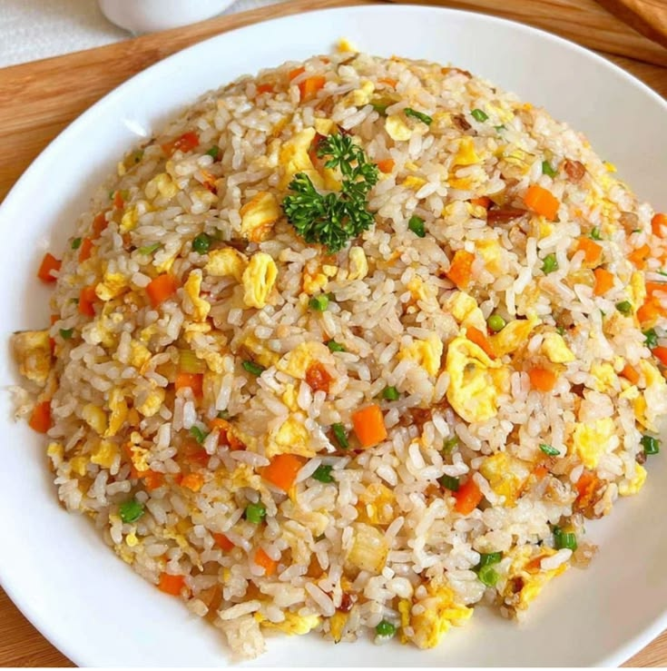

Egg Fried Rice
Leftover rice, scrambled egg, and soy sauce turned into a hot, savory bowl in about 10 minutes.

Ingredients
- 1 cup of cooked rice, cold from the fridge
- 2 eggs
- 1 tablespoon of soy sauce
- 1 green onion, sliced
Equipment
- Non-stick pan or wok
- Spatula
- Small bowl
- Fork
Instructions
- Beat the eggs in a small bowl. Break up any clumps in the cold rice with your fingers.
- Heat a little oil in the pan on medium heat. Pour in the eggs and stir until fully cooked, then move them to the side of the pan.
- Add the rice and stir for 3 to 4 minutes until hot all the way through.
- Stir in the soy sauce and mix everything together. Top with the green onion and serve.
Ingredient Notes
Eggs and soy sauce are common allergens, and soy sauce usually contains wheat. Cool leftover rice quickly, keep it in the fridge, and use it within 1 day. Ask an adult to help with the stove.
Make It Your Own
Add frozen peas and carrots, a few drops of sesame oil, or some cooked chicken.
Team publishing task: test the recipe, add your own photo, and credit any outside recipe inspiration you use.